What has changed over time?
The retrospective analysis traces workforce numbers, duty hours, utilisation, productivity, traffic and delays. The summary appears first; expand each part to follow the reasoning and examine the original graphs.
What the historical analysis shows
The historical assessment combines more than 20 years of workforce, utilisation, productivity, traffic and delay data. Four findings summarise the analysis.
- The evolution of the number of ATCOs in OPS clearly did not keep pace with increasing traffic demand; furthermore, most ANSPs showed significant year-on-year variations in ATCO numbers. This indicates a lack of a long-term ATCO staffing plan and/or difficulties in executing such plans. We understand that ANSPs need to commit to a steady, long-term increase in ATCO numbers, as the traffic demand is forecast to grow continuously.
- The utilisation of ATCO resources declined during the period: Most ANSPs recorded fewer hours on duty per controller in 2023 than in 2002. While this may have increased operational sustainability, it still negatively affects capacity output. Ideally, ATCO utilisation should be set at a level that is sustainable in the long term (while also accounting for fatigue management) and kept stable over the coming years.
- On the positive side, most ANSPs managed to improve ATCO productivity, an important component of capacity output. ATCO productivity must remain in the focus of ANSPs, as it can also be a cost-efficient way of improving capacity performance.
- It is clear from the datasets that the change in capacity output resulting from the evolution of ATCO numbers, ATCO utilisation and ATCO productivity was not sufficient to accommodate the growth in traffic. While there are significant local differences and positive examples, the overall picture on the network level remains alarming.
Controller numbers at network level
ACE datasets describe ATCO numbers from 2002 to 2023. The network-wide comparison uses 2005–2023 because some SES ANSPs are missing from the earlier years. Local comparisons use the longer series where available.
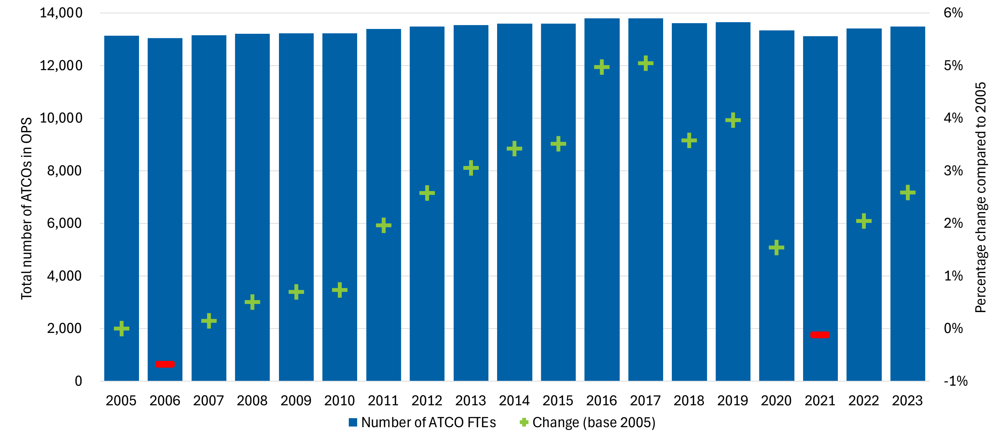
The actual number of ATCOs in OPS was fairly stable throughout the 18-year period: The minimum value in 2006 was 13,051 ATCOs in OPS, while the maximum was achieved in 2017, reaching 13,803, which translates into a variation of -0.68% and +5.05% compared to the basis of 2005, respectively. These figures include all ATS units: ACCs, APPs and TWRs. Looking at the annual changes in these figures, we see that the total number of ATCOs in OPS decreased in only four years during the period: 2006, 2018, 2020 and 2021. The two most recent years were heavily affected by the COVID-19 pandemic and are thus considered outliers. The reduction in 2006 is marginal, but the year-on-year decrease of almost -1.5% in 2018 is significant. Even more so, as it cannot be correlated with any demand- or supply-side shocks or major crisis events.
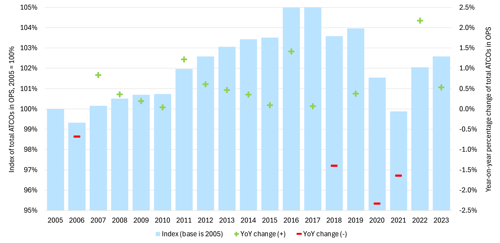
ACC controllers represent 55–56% of the overall ATCO population. Their numbers show a less favourable evolution than the total workforce: network ACC staffing exceeded the 2005 level only in 2017 and 2019.
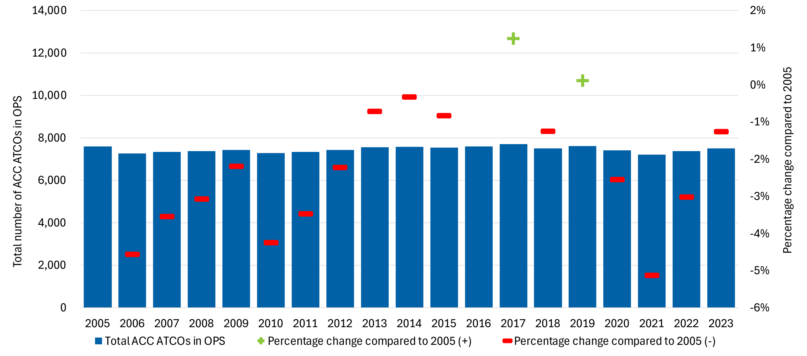
The year-on-year evolution of ATCOs in ACCs shows a decrease not only in 2006, 2018 and the two years affected by COVID-19, but also in 2010 and 2015. Once again, it is not clear what the factors were behind these reductions. To further accentuate the issue with the evolution of ACC controllers, we must also note that even though in 12 years the number of controllers increased compared to the previous year, in 2023 the network still had almost one hundred fewer ACC ATCOs in OPS than in 2005, which translates into a decrease of -1.26%.
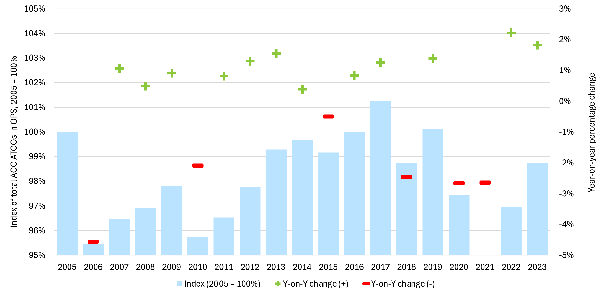
Local workforce trends
ANSP workforce sizes range from 54 to 2,850 ATCOs in OPS, so local trends are compared using percentage changes from the 2002 baseline.
To keep the comparison comprehensible, we divided the ANSPs into four clusters based on the number of ATCOs in OPS:
- The biggest ANSPs with more than 1,000 ATCOs in OPS.
- The upper-medium cluster with at least 250 but less than 1,000 ATCOs in OPS.
- The lower-medium cluster with at least 100 but less than 250 ATCOs in OPS.
- And the smallest ANSPs with less than 100 ATCOs in OPS.
Variation between ANSPs widened over time. In 2023, changes from the 2002 baseline ranged from −31% to +139%, while the interquartile range was approximately −2% to +22%. In the final decade of the series, relatively high values at a few ANSPs raised the average above the median.
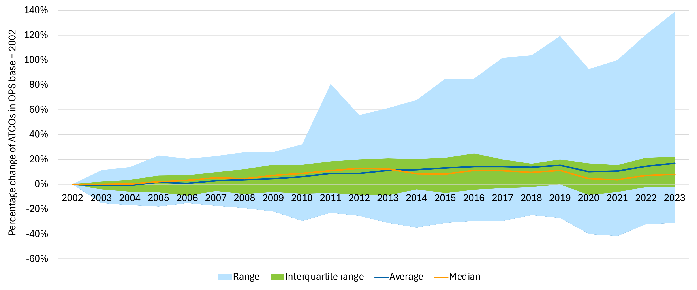
The cluster charts use the same scale so individual workforce trends can be compared.
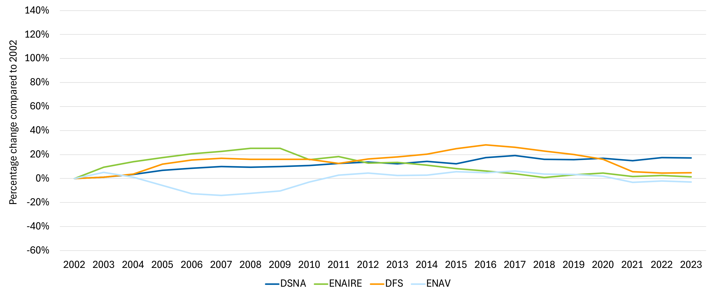
All ANSPs in the biggest cluster remain in the relatively narrow range of -14% to 28%. DSNA shows the steadiest increase, with an increase of 17% in 2023. DFS and ENAIRE have no clearly established trends, with an increase of 5% and 1% in 2023, respectively. Finally, ENAV has several years with negative values, closing the period at -3%. Apart from DFS, the impact of COVID-19 is not apparent in the figures between 2020 and 2023.
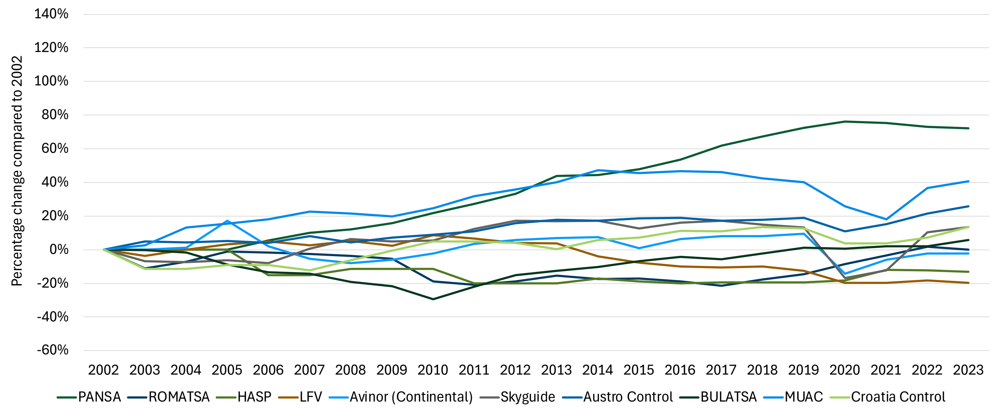
The range of values is wider in the upper-medium cluster, spanning -29% to 76%. HASP, Avinor and LFV all have negative figures at the end of the period, while PANSA, Austro Control and MUAC show an increase of more than 20%. Several ANSPs show significant declines during and after the COVID years, and the impact of Russia’s war of aggression against Ukraine is also evident in LFV values. The steady increase for PANSA indicates a more long-term approach to ATCO resource planning, showing a consistent, gradual increase until the impact of COVID-19 and the war in Ukraine affect operations. The evolution of ATCOs in OPS is also relatively consistent across MUAC, Austro Control and BULATSA (after 2010). Other ANSPs in the cluster show greater variation in their values.
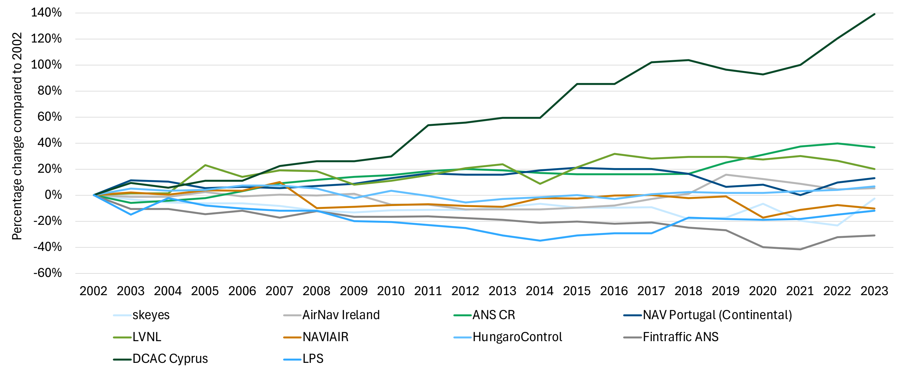
When looking at the lower-medium cluster, DCAC Cyprus is an apparent outlier, with the highest percentage change (139%) at the end of the period, indicating a relatively consistent increase except in 2020. At the other end of the range, Fintraffic ANS shows a -42% decrease in 2021, and the absolute lowest value in 2023 at -31%. This is at least partially explained by the impact of the war in Ukraine, though there is a consistent negative trend throughout the period. LPS, NAVIAIR and skeyes also have negative values in 2023 (-12%, -10% and -5%, respectively). AirNav Ireland, HungaroControl and NAV Portugal show a small increase of 5%, 7% and 13%, respectively, while LVNL (20%) and ANS Czech Republic (37%) display more significant growth, though with varying consistency.
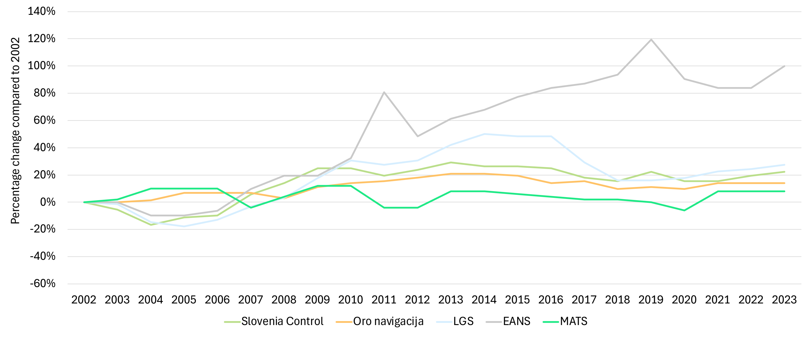
In the cluster of the smallest ANSPs, we once again observe a relatively wide range, from -18% to 119%. However, all ANSPs in this cluster have positive values in the last few years of the period. EANS is an outlier in this group, showing a growing trend from 2006 onwards, though with some variation. We must note, however, that due to the relatively small number of ATCOs in OPS working at the ANSPs in this cluster, the percentage change values may be misleading and are shown here only to allow easy comparison with the other clusters.
The workforce trends indicate different approaches to managing controller numbers. Only a few ANSPs show a consistent long-term pattern. The data alone do not distinguish weaknesses in strategic planning from difficulties in executing plans.
Responses to COVID-19 differed. Some ANSPs stopped training or released controllers, while others continued to increase staff numbers. Russia’s war of aggression against Ukraine also affected ANSPs differently. The traffic and delay analysis provides further context.
Hours on duty
Duty hours are compared as percentage changes from 2002 using the same ANSP size clusters as the workforce analysis.
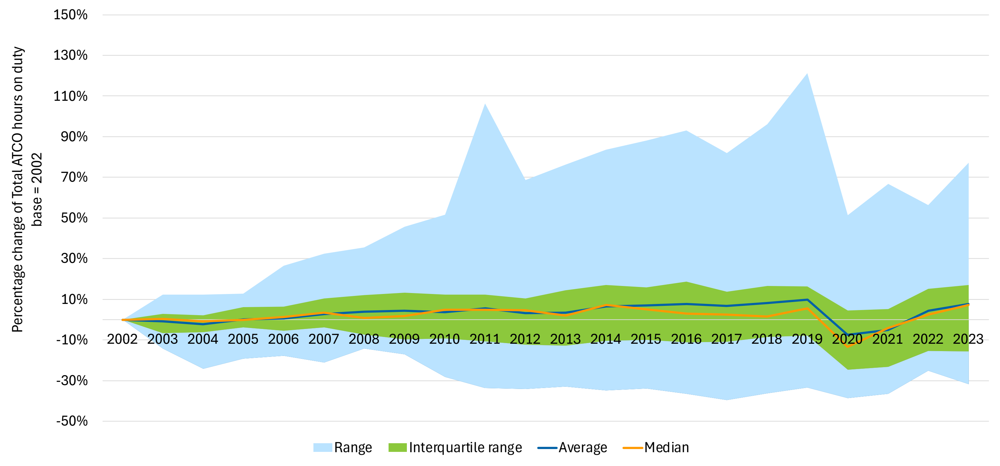
Duty hours peaked in 2011 and 2019, broadly alongside workforce numbers. The range narrowed after COVID-19 and remained narrower in 2023, at −32% to +77%. Outside the pandemic years, average and median changes mostly remained between 0% and +10%.
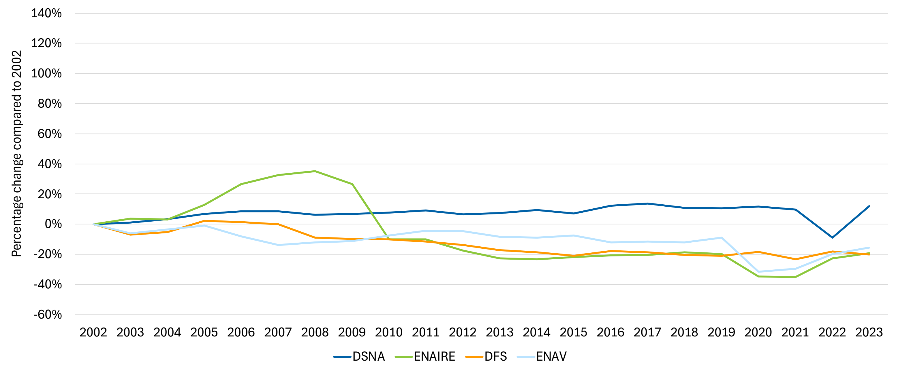
In the cluster of biggest ANSPs, the only ANSP to register an increase in total ATCO hours on duty over the period was DSNA (with 12% in 2023). It is interesting to see the drop in 2022 and not during the COVID-19 years. ENAV, ENAIRE and DFS all register a decrease over the period of -16%, -19% and -20%, respectively. The surge between 2005 and 2008 at ENAIRE is followed by a sharp drop, and it is also worth noting that the figures of DFS are fairly stable during 2020-2021, similar to those of DSNA, though also staying stable in 2022 and 2023.
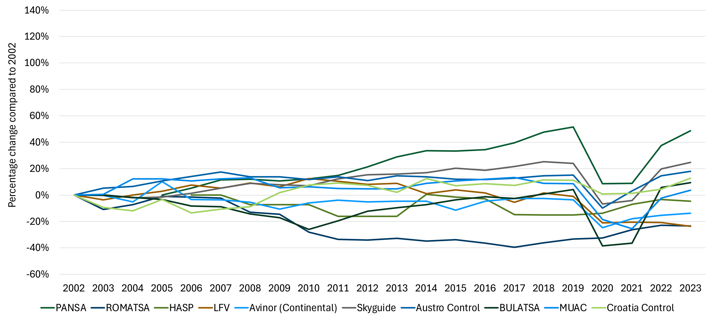
The upper-medium cluster of ANSPs shows more variation (the chart), especially in the middle years of the period: Figures range from around -40% to 50%, and even in 2023, the range is between -24% and 49%. ROMATSA and LFV have the largest decreases compared to 2002, while PANSA has shown strong growth, except during the COVID years.
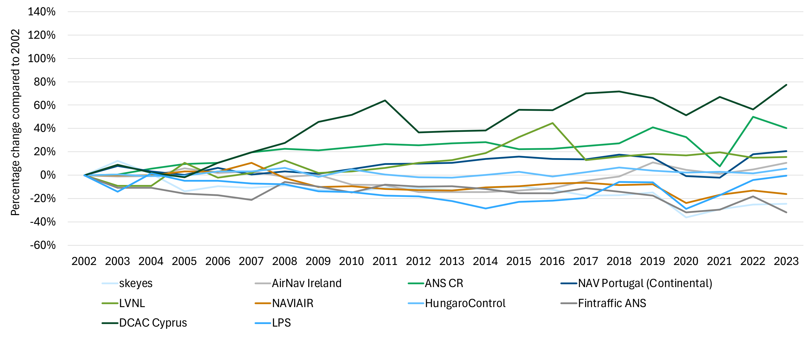
In the lower-medium cluster, DCAC Cyprus stands out with an overall growth of 77% over the period (following a dip in 2012), and ANS Czech Republic also displays solid growth. AirNav Ireland, NAV Portugal and LVNL also registered increases, while NAVIAIR, skeyes and Fintraffic ANS show decreases (the chart).
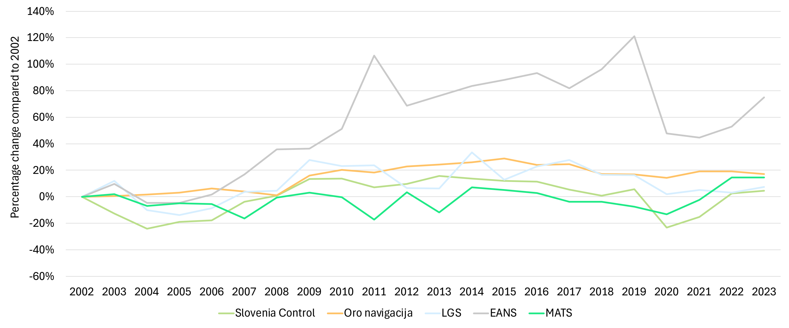
The chart shows the cluster of the smallest ANSPs, where EANS registered a remarkable increase until 2019. Oro Navigacija registered an increase of around 20% between 2008 and 2011 and stayed around that level for the rest of the period, following some ups and downs, seemingly less affected by the COVID-19 impact. There was a reduction in MATS compared to 2002 for most of the period, followed by a recovery and some growth starting in 2020, which eventually closed the period with a 14% increase.
In summary, the trends are quite similar to those of total ATCOs in OPS; however, for most ANSPs, total ATCO hours on duty follow the variation of traffic demand more closely, which is in line with our expectations. On the other hand, there are ANSPs in each cluster where ATCO hours on duty appear to be unaffected by the COVID-19 shock (DSNA, DFS, ROMATSA, LVNL, HASP, Oro Navigacija). Similar to the total number of ATCOs in OPS, ANSPs display widely varying trends over the period, with no dominant strategies emerging.
Hours on duty per controller
Combining duty hours with ATCOs in OPS shows how controller resources are used. Hours on duty per controller provides a utilisation indicator, while productivity adds the traffic output component.
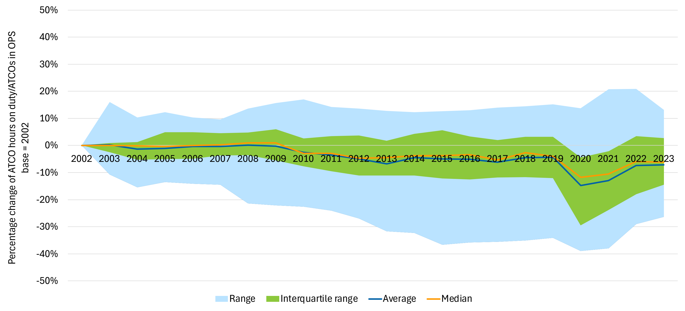
Hours on duty per ATCO generally declined. In 2023 the range was −26% to +13%, with an interquartile range of −14% to +3%. Average and median changes were −7% and −6%. Almost three quarters of ANSPs recorded fewer duty hours per controller than in 2002.
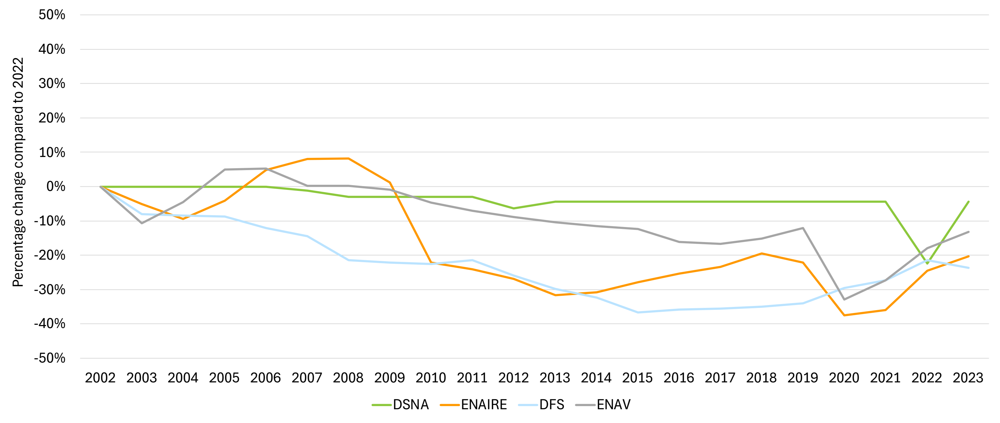
DSNA’s nearly flat utilisation series reflects its ACE reporting practices and does not represent actual changes. DFS, ENAIRE and ENAV recorded lower duty hours per ATCO than in 2002, with an upward trend from 2020.
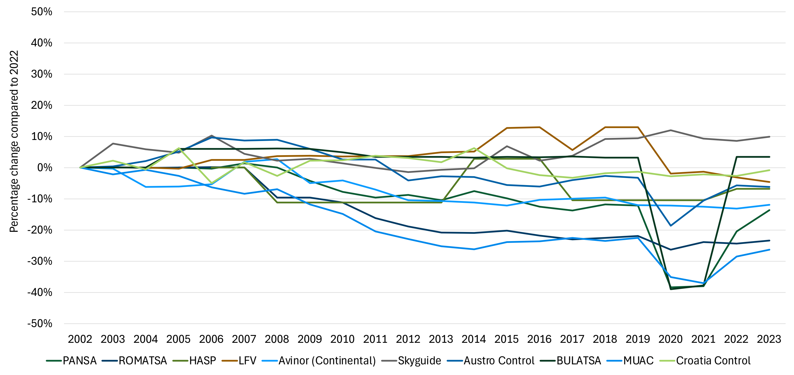
In the upper-medium cluster of ANSPs (the chart), Skyguide and BULATSA increased the efficiency of the utilisation of ATCOs (by around 10% and 3% in 2023, respectively) compared to 2002. MUAC, PANSA, ROMATSA and Avinor show a major decrease compared to 2002, while the others have less pronounced reductions. BULATSA shows a pronounced drop during the COVID-19-affected years, whereas for other ANSPs values remain quite stable during that period, indicating different approaches.
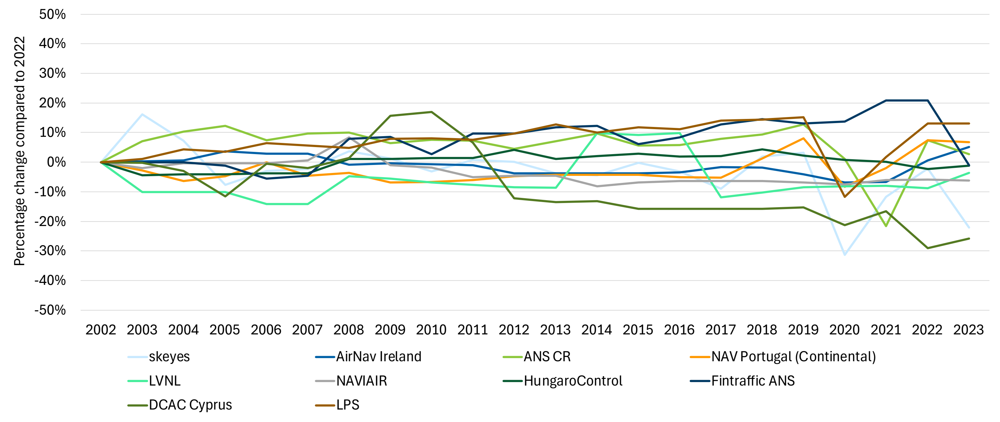
ANSPs in the lower-medium cluster show significant variation: DCAC Cyprus shows a clear and consistent decrease starting in 2010 (though from a very high base), whereas LPS, ANS Czech Republic and NAV Portugal all show an increasing trend, only interrupted by COVID-19. Fintraffic ANS (and its predecessors) also show a steady increase until 2022, followed by a drop in 2023. The figures for skeyes and LVNL appear highly volatile over the period (the chart).
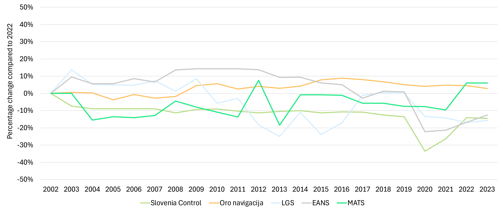
Among the smallest ANSPs (the chart), MATS and Oro Navigacija finish the period at positive values (though below 10%), following some variation, especially for MATS. Slovenia Control shows an early decrease that remains stable later, while LGS shows significant variation and closes below -10%.
In summary, we cannot observe a clear trend of increasing utilisation of controller resources across the ANSPs, though several players managed to increase their efficiency in this regard. As of 2023, seven ANSPs managed to increase both the number of ATCOs in OPS and the efficiency of their utilisation, while also seven ANSPs showed a decrease in both aspects. 13 ANSPs had more ATCOs in OPS with a reduced efficiency of utilisation, and there was one ANSP each with more ATCOs at the same efficiency of utilisation, and with more efficiency of utilisation with the same number of ATCOs as in 2002. Putting it differently, 21 ANSPs out of the 29 had more ATCOs in OPS in 2023 than in 2002, and equally, 21 ANSPs had a reduced efficiency of utilisation (though not all of the 21 were the same).
Productivity
ATCO productivity is composite flight hours divided by total controller hours on duty. Composite flight hours combine ACC flight hours with airport IFR movements multiplied by 0.2735. This ACE indicator supports analysis of changes within each ANSP, but differences in traffic and airspace complexity limit direct comparisons between ANSPs.
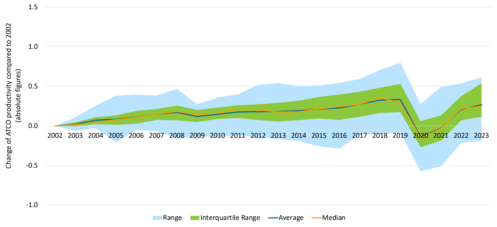
Productivity changes are shown in absolute values because ANSP starting levels range from 0.2 to 2.5. By 2023, more than three quarters of ANSPs had improved on 2002. The median increase was 0.25 and the average 0.27; changes ranged from −0.19 to +0.62.
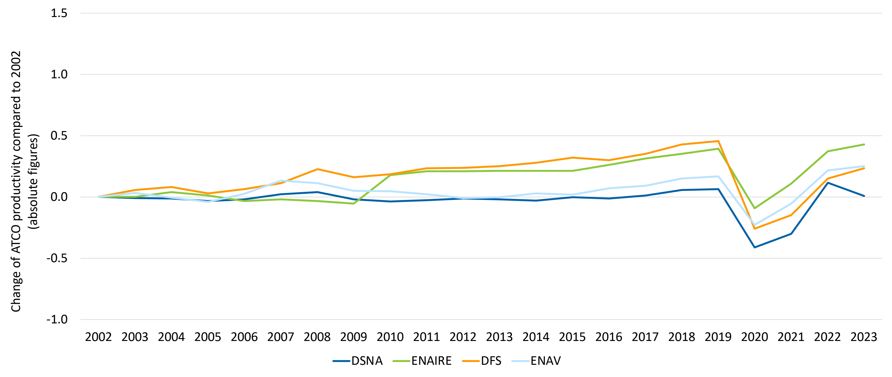
In the cluster of the biggest ANSPs (the chart), we can observe similar trends for DFS and ENAIRE: Both ANSPs showed an increase in productivity (at least since 2010). ENAV had a slightly smaller increase in most years than DFS and ENAIRE but greater increase in productivity in 2023 than DFS. For DSNA, productivity values hardly changed over the period and had almost returned to 2002 levels by the end of the period (though the reporting issue with total ATCO hours on duty in the ACE benchmarking distorts the indicator).
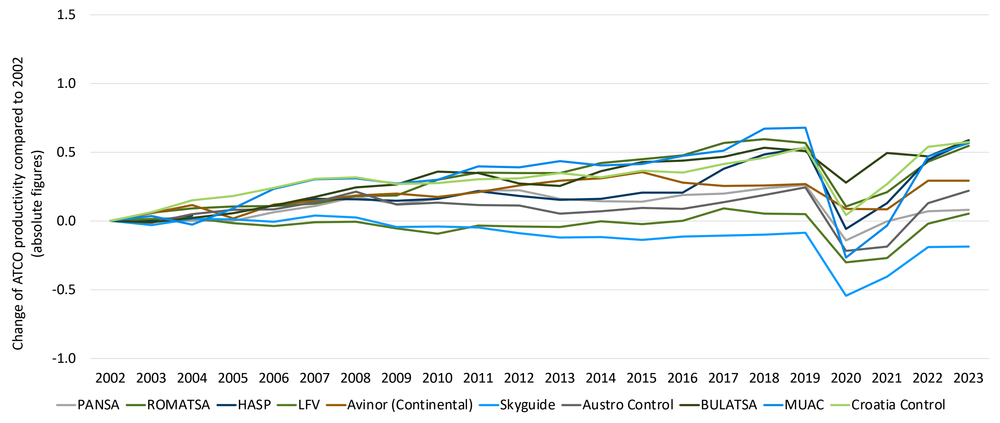
The chart shows the evolution of ATCO productivity in the upper-medium cluster of ANSPs. Skyguide has remained in the negative since 2009 and ended the period with a decrease of 0.19. HASP, BULATSA, ROMATSA, MUAC and Croatia Control all achieved significant improvements by the end of the period (all at least 0.5 above their 2002 values). LFV, Avinor, Austro Control and PANSA also had higher values in 2023 than in 2002.
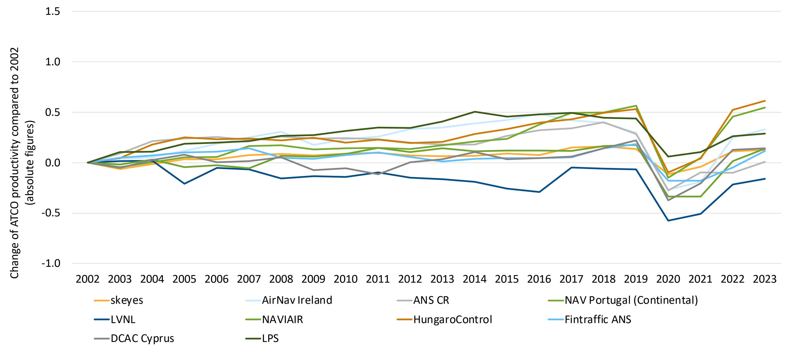
In the lower-medium cluster of ANSPs (the chart), LVNL showed a decrease over the period, while ANS Czech Republic ended the period at a productivity level almost the same as in 2002. NAV Portugal and HungaroControl registered significant increases over the period. The other ANSPs in the cluster all increased their productivity compared to 2002, even though LPS did not fully recover after the COVID years.
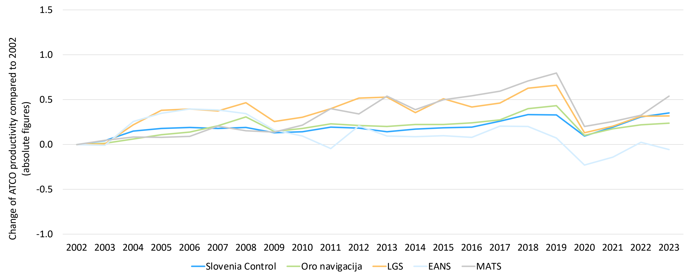
When looking at the cluster of the smallest ANSPs, the overall picture is similar to that of the other clusters: EANS registered a lower productivity value in 2023 than in 2002, while the other ANSPs improved their productivity over the period. However, neither MATS nor LGS managed to return to pre-COVID levels. It is also worth noting that the Baltic ANSPs in this cluster were all affected by the impact of Russia’s war of aggression against Ukraine from 2022 onwards.
In summary, most ANSPs (26) managed to increase their productivity during the period, with only 3 registering a reduced productivity (Skyguide, LVNL and EANS). The biggest increase in productivity was observed in the Eastern and South-Eastern parts of the SES area: ROMATSA, BULATSA, Croatia Control, Slovenia Control and HungaroControl all managed to increase ATCO productivity to more than twice that in 2002. The only other ANSP with a comparable increase was MATS. ENAIRE, NAV Portugal, HASP, LPS, LGS and Oro Navigacija all improved their productivity by at least a factor of 1.5, while the remaining ANSPs recorded smaller but still significant improvements, except for DSNA, where only a marginal increase was recorded.
Bringing the components together
The components can be combined to explain changes in capacity output.
The change in composite flight hours is the product of the changes in productivity, controller numbers and hours on duty per controller. Increasing the combined product increases capacity output, provided there is traffic demand to accommodate it.
Δ Composite flight hours = Δ ATCO productivity × Δ ATCOs in OPS × Δ ATCO hours per ATCO
The table brings the three components together for each ANSP over 2002–2023.
| ANSP | Composite flight hours | ATCO Productivity | Total ATCOs in OPS | ATCO hours/ ATCO |
|---|---|---|---|---|
| DSNA | 113% | 101% | 117% | 96% |
| ENAIRE | 141% | 175% | 101% | 80% |
| DFS | 104% | 129% | 105% | 76% |
| ENAV | 115% | 136% | 97% | 87% |
| PANSA | 165% | 111% | 172% | 86% |
| ROMATSA | 247% | 323% | 100% | 77% |
| HASP | 165% | 173% | 102% | 93% |
| LFV | 82% | 107% | 80% | 95% |
| Avinor* | 130% | 151% | 98% | 88% |
| Skyguide | 104% | 83% | 114% | 110% |
| Austro Control | 150% | 127% | 126% | 94% |
| BULATSA | 275% | 251% | 106% | 103% |
| MUAC | 141% | 136% | 141% | 74% |
| Croatia Control | 293% | 260% | 114% | 99% |
| skeyes | 92% | 121% | 97% | 78% |
| AirNav Ireland | 163% | 148% | 105% | 105% |
| ANS CR | 142% | 101% | 137% | 103% |
| NAV Portugal* | 204% | 169% | 113% | 107% |
| LVNL | 98% | 85% | 120% | 96% |
| NAVIAIR | 98% | 116% | 90% | 94% |
| HungaroControl | 215% | 204% | 107% | 99% |
| Fintraffic ANS | 82% | 120% | 69% | 99% |
| DCAC Cyprus | 208% | 117% | 239% | 74% |
| LPS | 193% | 193% | 88% | 113% |
| Slovenia Control | 242% | 232% | 122% | 86% |
| Oro Navigacija | 222% | 190% | 114% | 103% |
| LGS | 200% | 187% | 127% | 84% |
| EANS | 163% | 93% | 200% | 87% |
| MATS | 299% | 261% | 108% | 106% |
Overview of the evolution of composite flight hours and its logical components between 2002 and 2023 (source: ACE benchmark reports). * Avinor and NAV Portugal figures refer to continental airspace only.
It is apparent that most ANSPs compensated for deteriorating controller utilisation with increased productivity, while several ANSPs also had to compensate for declining ATCO numbers. Ideally, ANSPs should be able to increase all three components in the future to cope with growing traffic demand, while also recognising that there may be a trade-off between ATCO utilisation and the number of ATCOs in OPS if ANSPs are not able to consistently open more sectors. However, this might still be a positive outcome if the ANSPs were relying too heavily on utilising controller overtime.
Traffic, delays and delivery against plans
The EUROCONTROL delay datasets provide ample information on ATFM delays from 2011 to recent months. These datasets include not only daily delay data by delay reason but also the number of IFR movements for each entity. While the period covered by the delay data is significantly shorter than that of ATCO numbers, it still provides 15 years of data, with the 2011 to 2023 period overlapping, allowing for solid contextual analysis.
We used en route ATFM delays to examine the context of the evolution of ATCO numbers, as these were the most disruptive during the period. When analysing aggregate delay data, it is crucial to define the geographical scope carefully, since the number of IFR movements must be measured within that scope; these figures cannot simply be aggregated. To obtain the longest possible dataset while keeping the geographical scope unchanged, delay and traffic data was analysed for the “SES Area (RP1)” entity in the dataset. While this excludes some Member States that were not part of the SES area at the start of RP1, it still provides a good overview of the network’s general trends. This does not prejudice the analysis of ANSPs, as data is available for each entity in the dataset (but not for the current SES area for the entire period).
The overall trend over the period is shown in the chart. Early in the period, both traffic demand and en route ATFM delays decreased, then increased steadily until 2017. In 2018 and 2019, delays almost doubled, while traffic continued to increase only at or below the previous pace. During the COVID-affected years, traffic collapsed and delays were at an all-time low. However, when traffic began to recover in 2022, en route ATFM delays exploded, reaching the highest level over the 15-year period in 2024, even as traffic remained below pre-COVID levels. It must be noted, though, that traffic recovery was not uniform across the network: Several ANSPs experienced double-digit increases in traffic demand, while others remained 5-30% below the 2019 level due to the impact of Russia’s war of aggression against Ukraine.
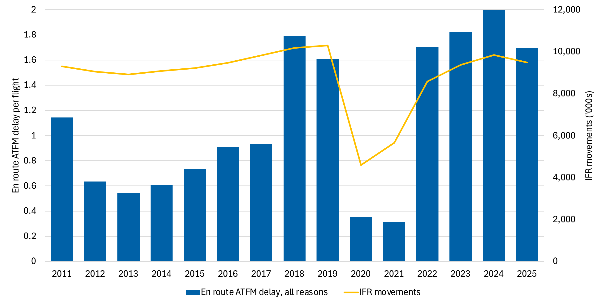
ATFM delays occur when the experts in the Flow Management Position (FMP) of an ATS unit decide to introduce an ATFM regulation to limit the declared airspace capacity (typically for a sector or an airspace block), thereby reducing the inflow of flights and ensuring that the ATCOs can safely manage traffic. When an ATFM regulation is introduced, the FMPs are required to note the reason behind it. While there are typically multiple reasons for introducing an ATFM regulation, FMPs must determine and indicate the dominant cause for each case. The codes designated for ATFM regulations are then carried over to ATFM delays, enabling delays to be grouped under the various codes and code groups (hereinafter referred to as delay codes).
For the purpose of the study, delay codes “C – ATC capacity” and “S – ATC staffing” are the most relevant categories. Code C is used when the ATS unit does not have sufficient capacity to cope with the traffic demand, either due to the general lack of ATCOs or otherwise. Code S is used when the ATS unit is unable to staff enough working positions at the time required to accommodate traffic demand due to the unavailability of ATCO staff. This may be due to staff shortages, limitations in the rostering scheme, poor planning or unexpected shifts in traffic. The definitions of delay reasons and delay codes are not clear-cut, and there is overlap between codes C and S. We use a combination of these codes to examine delays related to ATCO staffing issues. the chart shows the evolution of en route ATFM delays under these two delay codes over the same period. The overall trends align with the overall picture. The share of ATCO-related delays varies between 32% and 80% (in 2020 and in 2011, respectively) and is around 50-60% during most of the years in the period.
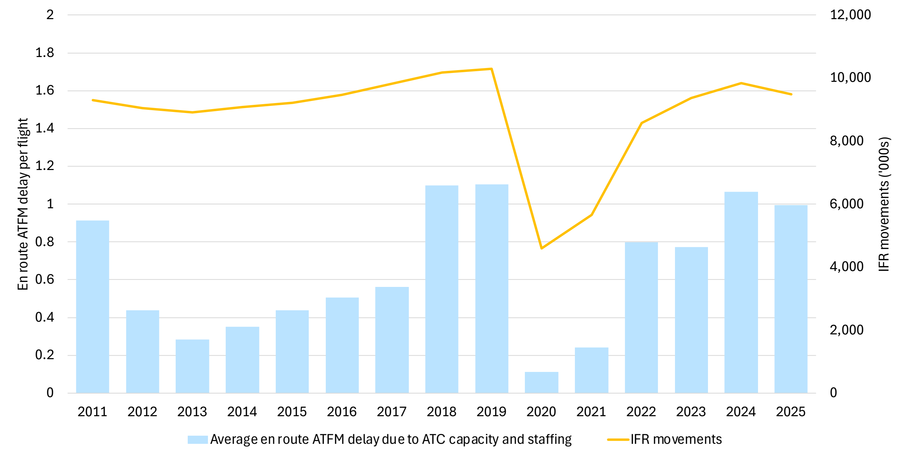
Based on the values observed during the period, it is difficult to establish a clear correlation between traffic demand and average en route ATFM delay per flight attributable to ATCO staffing issues (as well as to delays for all reasons). While the trends appear to be moving in the same general direction, the peaks in delays in 2018, 2019 and 2024 cannot be explained by traffic growth alone. It could be argued that the relationship between traffic demand and ATFM delays is not linear, but exponential (i.e. delays increase exponentially when the airspace becomes saturated), but even that does not seem to be justified by the figures if we look at the changes between 2018 and 2019 or between 2022 and 2024.
When we add the evolution of the number of ACC ATCOs in OPS to the picture, it becomes apparent that ATCO numbers are more strongly correlated with the delay figures than traffic growth. As the number of ACC ATCOs in OPS increases year-on-year, delays under codes C and S tend to decrease, as expected, except for the 2015-2017 period, when strong traffic growth apparently outpaced the increase in ATCO numbers. The combination of decreasing ATCO numbers and growing traffic explains the peak in the delays in 2018, while the subsequent increase in staffing in 2019 at least partially explains why delays did not increase further despite the growth in traffic. The same tendency is apparent between 2022 and 2023. the chart shows the combined picture, together with the latest information on the planned number of ACC ATCOs in OPS from the RP4 performance plans, for further context.
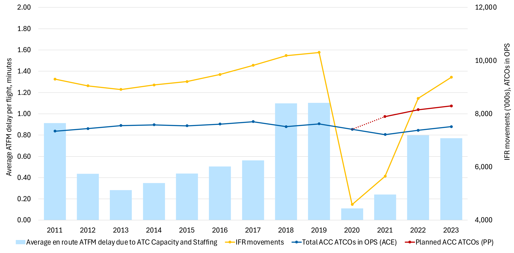
Outside the COVID-19 outlier years, traffic demand and controller numbers often moved independently. Annual changes rarely aligned in both direction and magnitude. Realising the planned workforce figures would still have left controller growth below traffic growth in most years.

The RP3 comparison shows a growing difference between planned and actual ACC staffing from 2021 to 2024. Controller numbers fell in 2023 despite traffic recovery and plans for growth. The actual workforce remained below its 2022 level in 2024, with a shortfall of around 500 controllers against the plan. Reporting differences mean these figures cannot be directly equated with the ACE series.
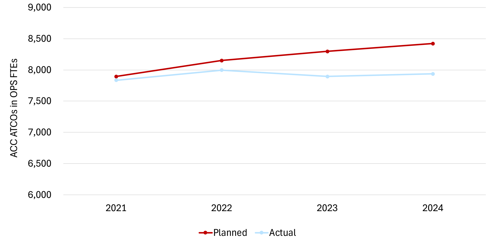